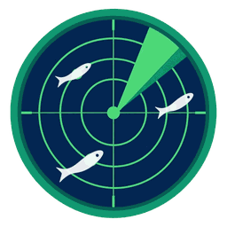

RadarAo vivo
--:--
—
Tela para o público
Aguardando uma apresentação ao vivo do Radar.
Painel ao vivo dos Objetivos estratégicos, agrupado por gerência. Entre com sua conta @ciahering.com.br pra ver os dados.

RadarAguardando uma apresentação ao vivo do Radar.